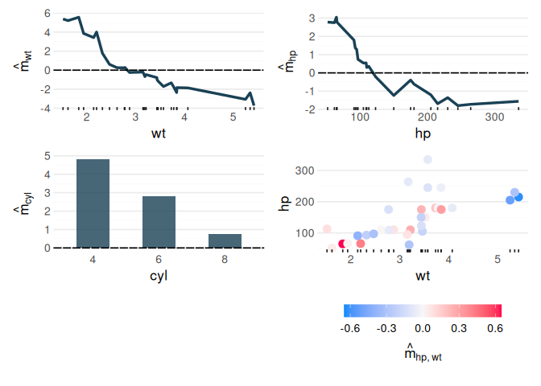

randomPlantedForest implements Random Planted Forest (Hiabu, Mammen & Meyer), a tree ensemble whose predictions you can read off directly, without post-hoc explanation methods.
Like a random forest, it averages many tree-based models grown on bootstrap samples. Unlike a random forest, each of these models is a sum of trees that each split on a fixed set of predictors, and max_interaction bounds how many predictors that can be. With max_interaction = 1 the forest is an additive model; with 2 it adds pairwise interactions, and so on. As a result, the fitted model decomposes exactly into an intercept, main effects and interactions up to that order:
Each component can be inspected and plotted on its own, and together they sum to the prediction.
Installation
Install the development version from r-universe with
install.packages("randomPlantedForest", repos = "https://plantedml.r-universe.dev")or from GitHub with
# install.packages("pak")
pak::pak("PlantedML/randomPlantedForest")Example
rpf() takes a formula, x/y data or a recipe, and predict() returns a tibble as in tidymodels:
library(randomPlantedForest)
mtcars$cyl <- factor(mtcars$cyl)
rpfit <- rpf(mpg ~ cyl + wt + hp, data = mtcars, ntrees = 25, max_interaction = 2)
rpfit
#> ── Regression Random Planted Forest ───────────────────────────────────────────────────────────────────────────────────────────────────────────────────────────────────────────────────────────────────────────────────────────
#> Formula: `mpg ~ cyl + wt + hp`
#> 25 tree families with 30 splits each on 3 predictors, interactions to degree 2.
#> ℹ Forest is not purified.
#>
#> ── Tree growing
#> split_structure: leaves
#> split_try: 10
#> t_try: 0.4
#> max_candidates: 50
#> split_decay_rate: 0.1
#> delete_leaves: TRUE
#>
#> ℹ Fit using 1 thread, also the default for `predict()` and `purify()`.
head(predict(rpfit, new_data = mtcars))
#> # A tibble: 6 × 1
#> .pred
#> <dbl>
#> 1 21.4
#> 2 21.0
#> 3 24.4
#> 4 20.9
#> 5 17.7
#> 6 19.1predict_components() returns the decomposition: one column per main effect and interaction, plus the intercept.
components <- predict_components(rpfit, new_data = mtcars)
head(components$m)
#> cyl wt hp cyl:wt cyl:hp hp:wt
#> <num> <num> <num> <num> <num> <num>
#> 1: 2.8275105 0.2569457 0.2970626 0.3448129 0.06873138 0.006002504
#> 2: 2.8275105 -0.2438784 0.2970626 0.3929089 0.06873138 0.076817727
#> 3: 4.8022694 1.7754646 1.3572422 -0.4610986 -0.41379471 -0.231709254
#> 4: 2.8275105 -0.4727413 0.2970626 0.3538112 0.06873138 0.256989969
#> 5: 0.7661282 -1.0143147 -0.3952336 0.4528133 0.02336632 0.241715900
#> 6: 2.8275105 -1.1525180 0.5397470 -0.4590129 -0.03247695 -0.199217461The glex package plots these components:
library(glex)
library(ggplot2)
library(patchwork)
(autoplot(components, "wt") + autoplot(components, "hp")) /
(autoplot(components, "cyl") + autoplot(components, c("wt", "hp")))
The Get started guide covers classification, recipes, saving models and more on interpreting components, and the Bikesharing decomposition article works through a larger example.